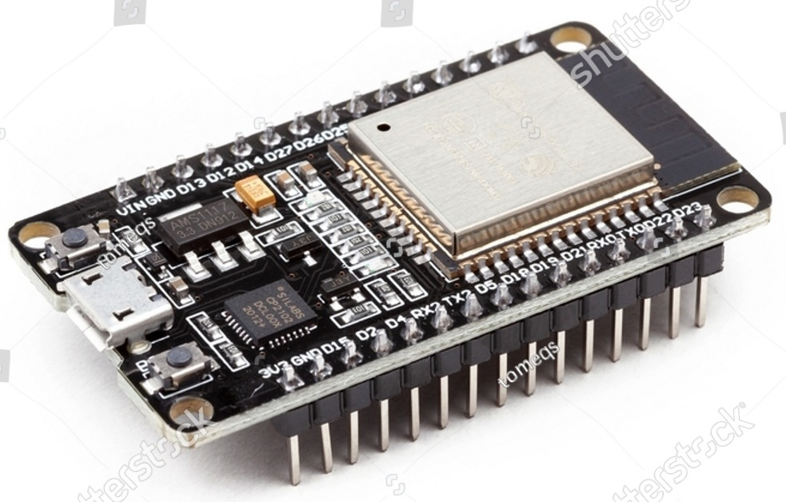
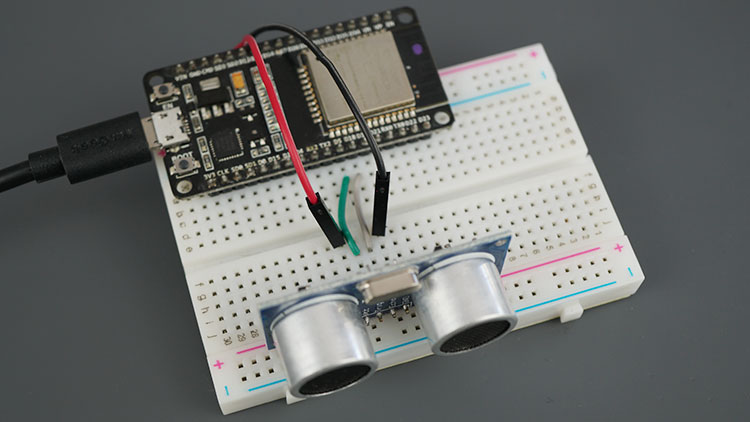
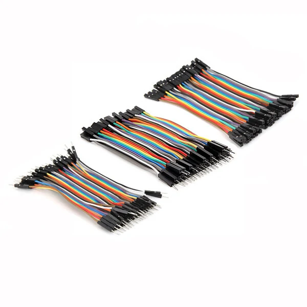
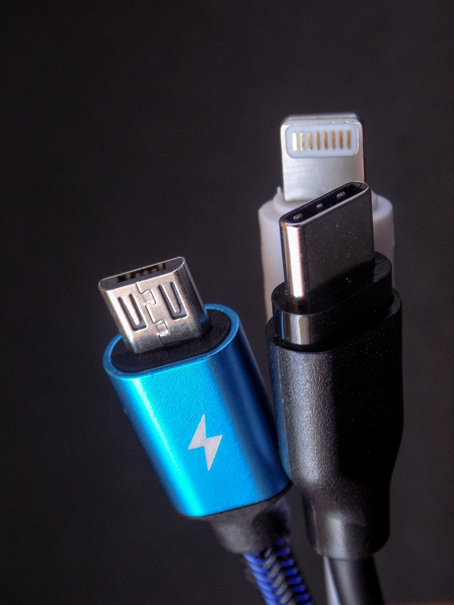

📦 1. Box Penyimpanan
Berfungsi sebagai tempat penyimpanan utama. Pastikan box selalu dalam keadaan kering. Disarankan untuk menambahkan silica gel di dalamnya guna mencegah kelembapan yang dapat membuat pin sensor dan mikrokontroler berkarat.

🛤️ 2. Lintasan Bongkar Pasang
Rakit dan lepas sambungan lintasan secara perlahan agar pengaitnya tidak patah. Simpan lintasan dalam posisi mendatar rata untuk menghindari bengkok/melengkung yang dapat menghambat laju kereta eksperimen.

🧠 3. Mikrokontroler ESP-32
Ini adalah "otak" dari alat peraga. Jauhkan board dari cairan atau benda logam saat alat menyala. Segera cabut sumber daya jika praktikum telah selesai agar chip tidak overheat (terlalu panas).

📡 4. Sensor HC-SR04
Modul pembaca jarak ini sangat sensitif. Jangan pernah menekan atau menyentuh kedua silinder logam (transduser) dengan jari. Pastikan posisinya selalu tegak lurus menghadap objek agar pantulan gelombang terbaca akurat.

🔌 5. Breadboard (Papan Rangkaian)
Tancapkan komponen dan kabel jumper secara lurus/tegak agar jepitan tembaga di dalam lubang tidak cepat longgar. Pastikan lubang breadboard bersih dari debu atau serpihan kabel yang patah.

🔗 6. Kabel Jumper
Saat mencabut kabel dari breadboard atau ESP-32, selalu pegang dan tarik pada bagian ujung plastik hitamnya (konektor). Jangan menarik bagian tengah kabel karena serabut tembaga di dalamnya sangat rentan putus.

⚡ 7. Kabel USB (Max 3-5 Volt)
Gunakan adapter listrik atau laptop tipe mikro dengan output maksimal 5 Volt. Dilarang keras menggunakan adapter Fast Charging hp tipe baru (yang tegangannya bisa 9V-12V) karena dapat langsung membakar regulator tegangan pada ESP-32.